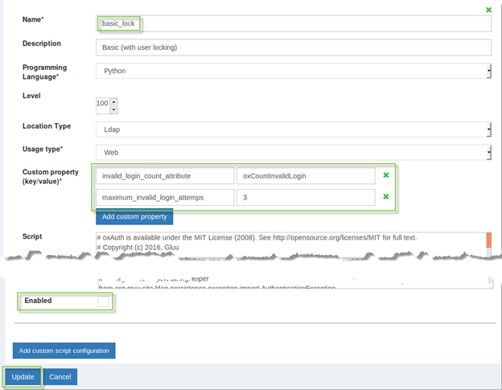
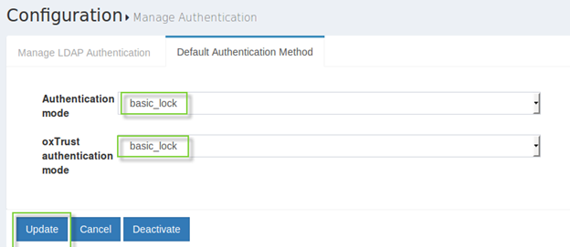

User Authentication Introduction#
The Gluu Server is most frequently used to protect web-accessible resources. People navigate to a protected webpage and the application redirects the person to the Gluu Server for authentication and authorization. The Gluu Server determines who the person is, and whether the person has the right to access the protected page. After a successful authentication, the Gluu Server redirects the person back to the protected page with an active session.
The Gluu Server is very flexible in handling authentication. By default, the Gluu Server uses username and password authentication. However, using the Gluu Server's interception script infrastructure, you can define multiple authentication methods and custom business logic for complex multi-step authentication workflows. You can have multiple authentication mechanisms active at the same time--Web or mobile clients can request a certain authentication type by using standard OpenID Connect request parameters.
Interception scripts allow you to configure authentication processes and customize how they are applied. Sophisticated authentication logic can implement adaptive authentication. For example, you can add extra authentication steps based on contextual information such as fraud scores, location, or browser profiling. You can also customize the look and feel of a web authentication: html, css, images and javascript can be externalized and managed by your organization.
Basic Authentication#
By default, LDAP is used to authenticate usernames and passwords. You can set a default authentication method for access to external applications, as well as access to the Gluu Server UI. Until additional authentication mechanisms are enabled via custom scripts, default authentication will always be some variation of username and password.
Configuring Multi-Factor Authentication#
Interception scripts are used to implement multi-factor authentication. A number of scripts are included out-of-the-box, including scripts to support FIDO U2F tokens (like Vasco and Yubikey), Gluu's free Android and iOS two-factor authentication application called Super Gluu, certificate authentication, Duo Security, One-Time Passwords, and more.
Implementation guides for each of the pre-supported authentication mechanisms listed above can be found in the pages that follow in this User Authentication Guide.
In addition, organizations frequently have custom requirements for multi-factor authentication. For instance, only users from a certain group should be prompted for two-factor authentication, or, only prompt users for two-factor authentication when trying to access protected resources from an unknown IP address. Custom interception scripts allow you to implement these types of policies, as well as any other business driven policy that can be scripted.
Learn more about how to write a custom interception script.
Review our custom authentication script tutorial, where we demonstrate how to write a script to implement OTP authentication using Twilio to send an SMS code for a two-step out-of-band authentication mechanism.
Configuring Account Lockout#
The Gluu Server is shipped with a custom authentication script that implements a basic account lockout policy which will deactivate a users account after a set number of consecutive failed login attempts.
The script uses authentication settings provided in the Manage LDAP Authentication tab within Configuration > Manage Authentication. In case the set threshold of failed logins is reached, the “gluuStatus” attribute of the user in question will be set to inactive and login counter is reset to zero. The login counter will also be reset to zero if several unsuccessful login attempts are finally followed by a successful one (before exceeding the limit). You can re-enable a locked account by settings
its gluuStatus attribute back to active via web UI.
To configure this feature navigate to Configuration > Manage custom scripts and find basic_lock script on the Person Authentication tab. There are 2 configurable properties:
-
Invalid_login_count_attributesets the name of the attribute used to store the current amount of failed login attempts. It assumes your schema already allows such an attribute to appear in user entries. The default attribute isoxCountInvalidLoginand it’s already supported by Gluu’s LDAP schema. -
Maximum_invalid_login_attempssets the threshold for number of failed login attempts before the user gets locked out.

- After script is configured tick the
Enabledcheckbox - Click the
Updatebutton - Click on
Configuration>Manage Authenticationon the left menu and selectDefault Authentication Methodtab. - Select
basic_lockauthentication method for oxAuth and/or oxTrust. - Click the
Updatebutton there. 
Customizing the Login Page#
Learn how to customize the look and feel of Gluu Server pages in the Design Customizations(add-link) section of the Operations Guide.